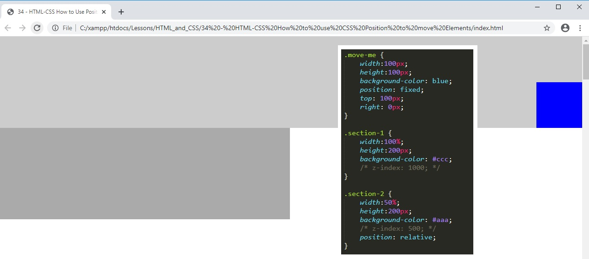
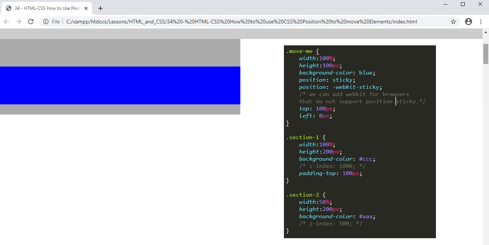

<!DOCTYPE html>
	<html>
		<head>
			<meta charset="utf-8">
			<meta name="viewport" content="width=device-width, initial-scale=1">
			<title>34 - HTML-CSS How to Use Position to Move Elements</title>
			<link rel="stylesheet" href="style.css">
		</head>
		<body>
			<section class="section-1">
			</section>

			<section class="section-2">
				<div class="move-me"></div>
			</section>
	</html>

			<section>
				<br>
				<br>
				<h1>34 - HTML-CSS How to Use Position to Move Elements</h1>
				<br>
				<br>
				<h3>01. We start with the below code to create a light grey box at the top that covers the full width of the screen. Below is a darker grey box that only covers half the width of the screen. Inside the bottom darker gray section is a 100x100px blue div box. See below screenshot for the HTML and CSS starting code.</h3>
				<h3>01a. We will use CSS position to manipulate the position of the blue box. Note that CSS position should not generally be used to move elements around in a webpage unless it is for a specific purpose. It may cause unforseen issues of elements appearing on the top of other elements if not used carefully. Normally padding and margin should be used to position an element.</h3>
				
				<br>
				<br>
				<h3>02. If elements do appear on top of each other then the one with the highest z index inside the style sheet will be ontop. In the case below section 1 would be ontop because the z-index is highest. Note that the CSS is commented out because we are not going to use z-index for this lesson.</h3>
				
				<br>
				<br>
				<h3>03. When it comes to position in CSS we have a number of options: relative, absolute, fixed and sticky.</h3>
				<h3>03a. position: Relative. Here we have said top: 100px. So by using position relative we are saying that whatever we positioning we apply it will be applied from the elements relative position. In this case the blue box jumps down 100px. </h3>
				
				<br>
				<br>
				<h3>04. Position absolute takes the element off the webpage completely and drops it where we specify.</h3>
				<h3>04a. position: absolute Top and right 0px. Here we have dropped the element at the top of the webpage to the right.</h3>
				
				<br>
				<br>
				<h3>04. Position absolute takes the element off the webpage completely and drops it where we specify.</h3>
				<h3>04a. position: absolute Top and right 0px. Here we have dropped the element at the top of the webpage to the right. if we change position absolute top to 100px then this will drop the blue box down 100px from the top of the page.</h3>
				
				<br>
				<br>
				<h3>05. But what if we wanted to move the blue div box within the container of position-2?</h3>
				<h3>05a. We can add position relative to the container styling.</h3>
				
				<br>
				<br>
				<h3>06. We can move the blue div box element inside the container now.</h3>
				<h3>06a. for example we can shift it down 100px from the top.</h3>
				
				<br>
				<br>
				<h3>07. Position fixed fixes the element in one place and all other elements can move underneath. This is usefull if we want our header to allways be visible on the top of the page and we want the content to disapear underneath when we scrowl down.</h3>
				<h3>07a. In this example the blue box is back to the same place as position absolute at the top of the page.</h3>
				
				<br>
				<br>
				<h3>08. To fix the blue box as something resembling a header I have set width to 100%. Position fixed and top 0px.</h3>
				<h3>08a. Not that the section-1 box would appear underneath the blue header box unless I bump it down with padding equal to the height of the blue header box(100px).</h3>
				
				<br>
				<br>
				<h3>09. Position sticky is going to be an effect that we used to nead java scrpt to implement. </h3>
				<h3>09a. Here the blue box is set to sticky so it drops into its container however when we scroll down on the container it stays on the page within the container.</h3>
				
				<br>
				<br>
				<h3>10. Note that position sticky is a relatively new feature in CSS so it may not be supported by all browsers. </h3>
				<h3>10a. We can solve this issue by adding another line of CSS code for position sicky that contains webkit.</h3>
				
				<br>
				<br>
			</section>
		</body>


	</html>